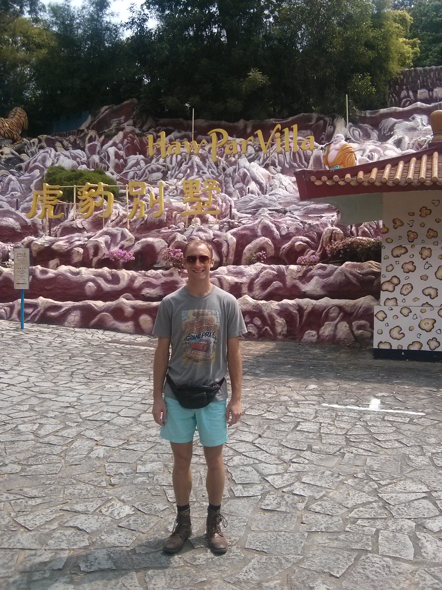
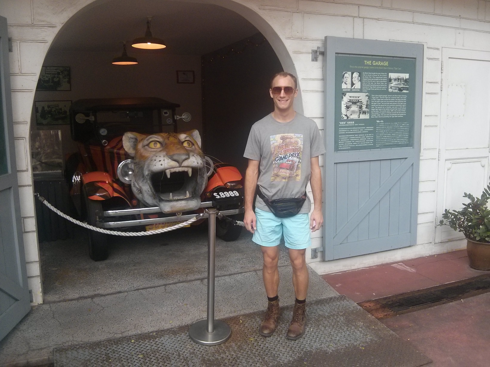
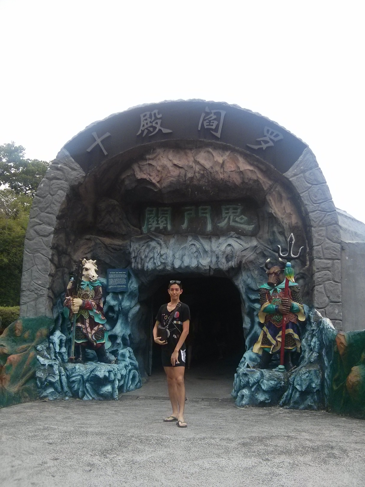
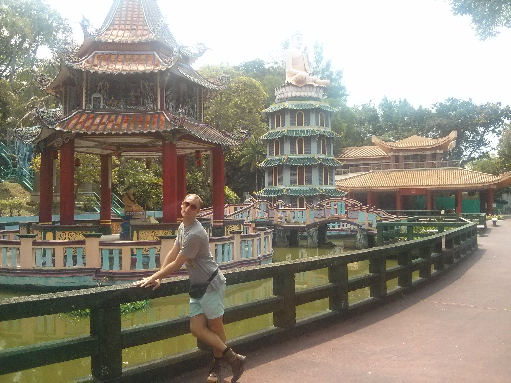
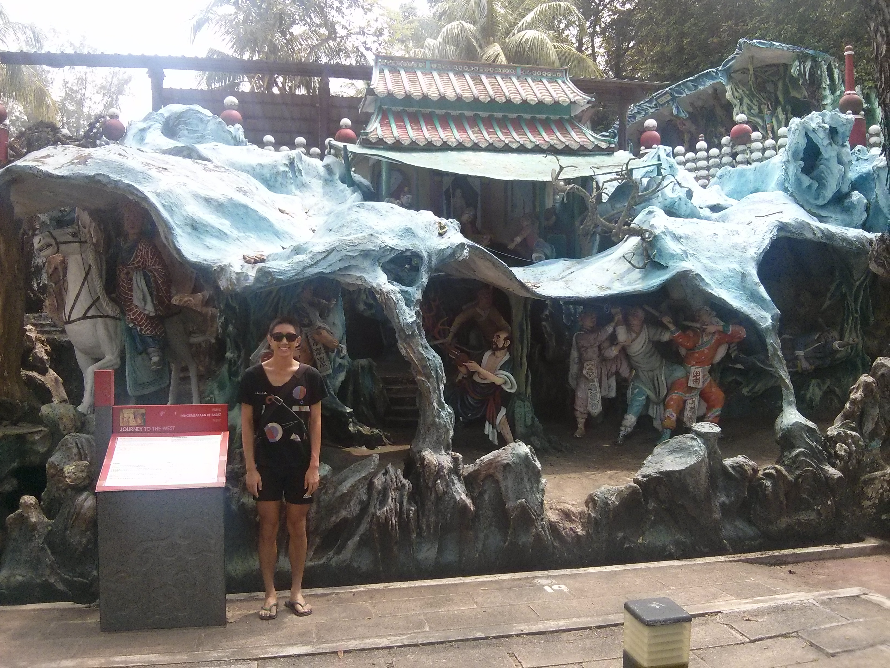
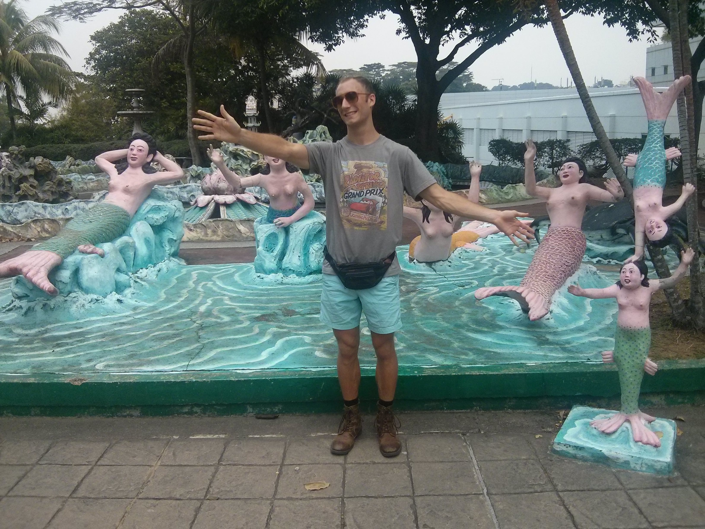
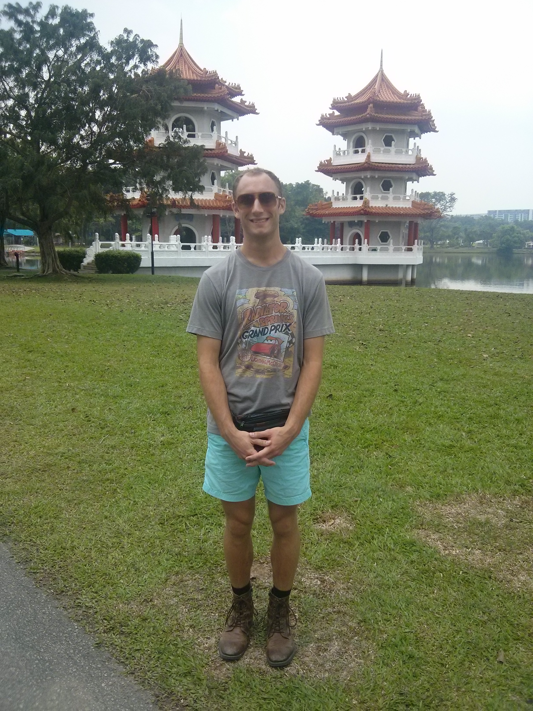
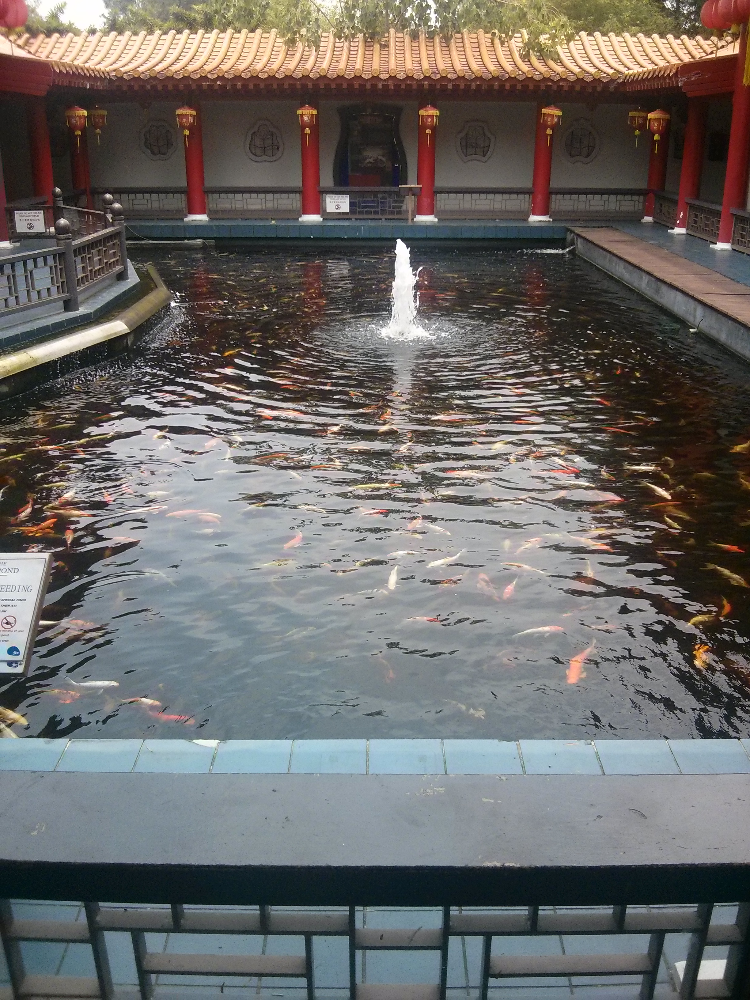

We decided to do an ultimate day trip to other sites of Singapore to see what they had on offer, that was aside from just Marina Bay Sands, Gardens By The Bay, etc. largely which are newly constructed, soulless forms of culture promulgated by a sucky tourism board /bitterness. Haha, well, actually, they are quite nice to go to, but we wanted to see what other historical things they had on offer. If Singapore's known for anything, it's a park, so Chinese Gardens we'd go to. The other was a total surprise: Haw Par Villa.
Starting off at Haw Par Villa, it was a small amusement park put together by the brothers -- Aw Boon Par, Aw Boon Haw, hence the name -- who invented Tiger Balm. They were Burmese, and had set this place up as kind of a eastern version of Disneyland. However, that largely fell through, and what remains is remnants of their work: large displays of Chinese mythology and culture. It's kind of weird, done in a cheapish plastic-y way, but the statues are actually pretty ornate in terms of color and sculpture. You can enter through the "ten courts of hell" and see how the Chinese believed those who made it to the afterlife would be judged. Then, there's bits about sun wu kong, a monkey god, and his journey to the west (one of the four of the classical Chinese texts). Other than that, there's some gods lying around, etc. It's a fun place to explore, as you can walk 'among' the sculptures and stuff, ducking into the holes. The best part is that most of it has gone into disrepair and low maintenance, so it gives it an eerie, empty park vibe. Still, culturally speaking, I think Haw Par Villa is one of the most historical things you can see in Singapore. It's been around since the 30s and gives an image of Singapore in the 30s, and a peek into dialect Chinese culture.
Plus, to my Asian brothers and sisters out there, how many of you guys have ever used, or at least know the smell of dat Tiger Balm.. yeah you do. We grew up on that stuff!






Afterwards, we headed out to Chinese Gardens. Actually, what it was more like was just a huge park with the occasional pagoda laid out here or there. There were some places that had your typical Chinese/Japanese-ish style architecture, with a house encircling a pond and walkways all along it. Is that Japanese or Chinese.. I'm not sure. Anyway, it was relaxing to walk around and get a glimpse of some of the statues and shrines erected. If anything, coming to Haw Par Villa and the Chinese Gardens actually reminded me that we were living in Asia, since so often all we get is the CBD and the commute to work on the M-F timeline. Definitely some overlooked tourist places that would give a more local, Southeast Asian flavor. If you ever come to visit us, let us know and we'll take you!

